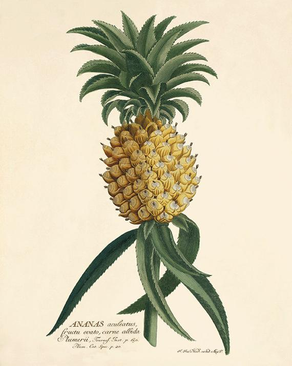

Biographies
The Editors
The two editors of Uncanny Yarns, Michael Chappell and C. F. Howitt, led anonymous lives for the most part, despite some of the more colorful stories associated with them. Both are reported to have had business cards claiming to be "lead editor" of Uncanny Yarns, with the other editor's name listed below as their "assistant." They each co-edited every issue of the periodical from 1929 to 1947, and often stepped in to write stories when they couldn't find writers willing to accept Uncanny Yarns's meager pay. In fact, it's likely that some of Uncanny Yarns's more regular writers were Mr. Chappell and Mr. Howitt writing under pseudonyms. Poor record keeping makes it impossible to tell which writers were real, although Jackson Becks and Ray Newkirk are confirmed to be actual people.
